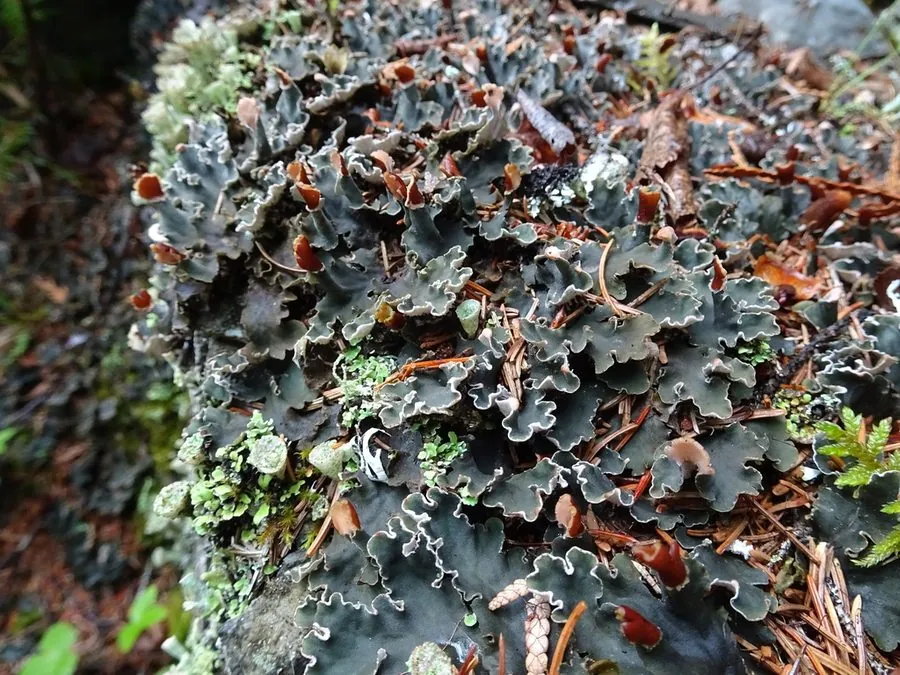

真菌 · 真菌界
地卷 Peltigera rufescens

地卷是叶状地衣，地衣体褐色、裂片宽大，背面有脉纹和假根，体内共生蓝细菌能固氮，常见于草地和苔藓丛中。
- 分类
- 门子囊菌门纲茶渍纲目地卷目科地卷科属地卷属
- 栖息环境
- 草地、林缘、苔藓丛与岩石薄土，喜湿润环境
- 地理分布
- 北半球温带与寒带，中国北方、西南高山和东北林区有分布
- 保护级别
- 暂无评估（IUCN 未评估，中国未列入重点保护名录）
物种志
地卷是地衣，由子囊菌与蓝细菌（念珠藻）共生形成。地衣体呈叶状，直径 5–15 cm，裂片宽大，边缘常向上卷起；表面褐色、灰褐色至红褐色，干燥时质地脆，湿润时变为蓝绿色并变软，这是体内蓝细菌吸水后的表现。背面颜色较浅，有明显的脉纹和成束的假根，用来固着在土壤和苔藓上；子囊盘少见，呈马鞍状。
地卷生于草地、林缘、苔藓丛和岩石表面的薄土上，喜湿润环境，在温带和寒带分布，中国北方、西南高山和东北林区有记录。它与蓝细菌共生，能把空气中的氮固定为植物可利用的氮素，是贫瘠土壤上的“天然肥料厂”。地卷不可食用，但可作为环境监测和固氮研究的材料；它对湿度变化敏感，干旱时会卷缩休眠，遇水后迅速恢复。
形态与习性
- 分类地衣，由子囊菌与蓝细菌共生
- 地衣体叶状，直径 5–15 cm，裂片宽大
- 颜色干燥时褐色，湿润时蓝绿色
- 背面有脉纹和成束假根
- 固氮共生蓝细菌可固定空气中的氮
- 生境草地、苔藓丛与岩石薄土
- 食用性不可食用
趣味知识
- 地卷体内共生的是蓝细菌，所以湿润时会变成蓝绿色。
- 它能固定空气中的氮，是贫瘠土壤上的“天然肥料厂”。
- 干燥时地卷卷缩变脆，遇水后很快恢复柔软。
- 地卷背面有脉纹和成束的假根，是辨认它的特征。